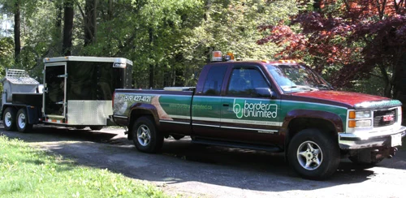
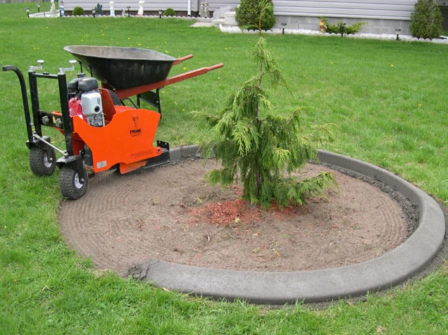

The estimate
Allow about 30 minutes for the first visit. We measure the areas you have in mind and provide a written price. The price stays firm unless the layout or scope changes.
Home/How we install your border
Bill measures the job, walks through the layout with you and installs the border. Most installations take one day, depending on the size and conditions.
Allow about 30 minutes for the first visit. We measure the areas you have in mind and provide a written price. The price stays firm unless the layout or scope changes.
We return with colour and profile samples and mark the proposed lines on the ground. This is the time to widen a bed, work around a tree or change the shape of a corner.
A sod cutter clears a narrow strip. We level and compact the ground where needed. Choose a place to leave the sod on the property. Hauling it away costs extra.
Concrete is mixed on our trailer with locally sourced sand, aggregate and cement. Wheelbarrows carry it to the extruder. The machine shapes the curb and places the reinforcing cable.
We trowel the surface, apply the chosen stamp or roller, cut control joints and seal the finished curb. Our equipment fits through openings as narrow as 30 inches.
Keep traffic off the new curb and follow the watering and curing instructions. The concrete needs 28 days to fully cure. Read the care guide.


We’ll walk the property with you and measure it for a free written quote.